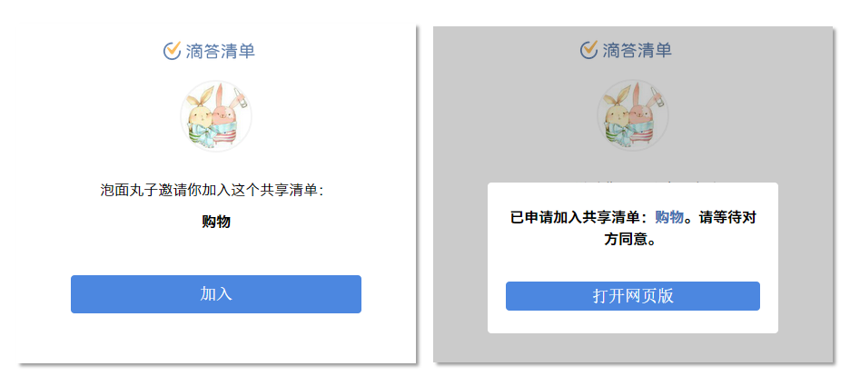

分享和协作
滴答清单不仅能记录你个人的行程安排计划，帮助你简化生活，还可以和他人共享清单，实现协作合作和内容分享。
共享清单
共享一个清单会将清单内所有的任务都共享给对方，而且参与共享者们都可以对清单内的内容进行编辑或者修改，或者添加删除内容。
适合于以下场景:
- 管理小组项目：在一处存放所有的会议记录、文件、待办事项列表。
- 建立创新知识库：保存设计灵感、文章与图片。
- 计划旅行：保存旅行路线、行李清单、电话号码，以便随时随地浏览。
共享清单，只需进行以下操作：
- 在侧边栏中，点击清单进入清单列表
- 点击右上角
 「更多图标」，选择「共享」
「更多图标」，选择「共享」 - 在跳转页面点击右上角
 ，选择通过下列任一选项：
，选择通过下列任一选项：- 最近联系人：显示最近几个联系人，可以选择一个或者多个
- 通过邮件邀请：输入好友的邮箱地址即可。该邮箱会收到一封发自滴答清单的邮件，通过点击邮箱内的链接来激活共享。并前往自己的滴答清单通知中心，确定接受该分享，才分享成功。请注意，邮箱地址可以是未注册过滴答清单的用户，但是只有通过该邮箱登陆滴答清单，才能看到这个分享通知。
- 通过链接邀请：点击即创建一个链接共享清单。直接选择分享途径或者是复制链接发送给自己的好友。好友确认后会发送一个申请加入清单的通知到你的滴答清单账户。只有你确认同意该申请之后，这个清单才被成功分享。
通过链接邀请好友加入共享清单适合于以下场景：
- 当好友是通过QQ、微信或者微博这样的第三方账户登录时，只能通过链接邀请好友共享清单。
- 不知道邀请对象的滴答清单账户，或者还未注册滴答清单账户。
- 邀请的共享对象比较多，一个个添加邮箱比较麻烦。
通过链接邀请具体步骤：
- 选择清单并点击分享，选择「通过链接邀请」，选择分享的渠道或者复制这段分享链接，发送给好友。
- 好友打开链接以后，可以看到如下图（左）邀请界面，点击加入，会向分享者发送一个加入申请，然后跳转至界面如下图（右）。
 - 你可以在自己的消息通知中心看到一条“XX 申请加入你的共享清单”的通知，点击接受后即可分享成功。
在你成功分享了之后，关闭这个分享的链接，该链接就会失效，无法再被使用。
共享清单以 「共享清单图标」表示，加入的共享清单者都可以对该清单内容进行编辑。在清单编辑界面或者共享界面可以看到清单共享者的用户名。
「共享清单图标」表示，加入的共享清单者都可以对该清单内容进行编辑。在清单编辑界面或者共享界面可以看到清单共享者的用户名。
评论任务
可以将评论功能做为备注说明使用，或者是和共享者交流表达自己的想法。
给一个任务添加评论，只需进行以下操作：
- 点击任务进入任务详情界面
- 点击右上角「更多图标」，选择
 「评论」
「评论」 - 在跳转页面上，在下方输入框中输入自己要评论的内容，点击「发送」，就可以看到评论成功发送。
- 点击「完成」退出评论编辑界面。
你会在任务详情页看到最新的一条评论和总评论数量。可以对自己的评论进行编辑或者删除评论。
编辑或删除评论，只需进行以下操作：
- 进入任务详情界面
- 点击下方的评论区域，进入评论展示界面
- 长按自己的发表的评论，会出现「编辑」「删除」的图标
评论任务功能在没有与其他人共享清单时，也可以使用。
指派/分配任务
共享后的清单，可以对任务进行分配，指定任务的负责人或者执行者。共享清单的任何人都可以进行指派分配操作，收到指派命令的人会在 「通知中心」收到相关通知提醒。
「通知中心」收到相关通知提醒。
指派清单，只需进行以下操作：
- 点击任务进入任务详情界面
- 点击右上角「更多图标」，选择
 「分配给」
「分配给」 - 选择分配的对象，一个任务只能指派给一个对象。如果不需要指定对象可以选择「无人」